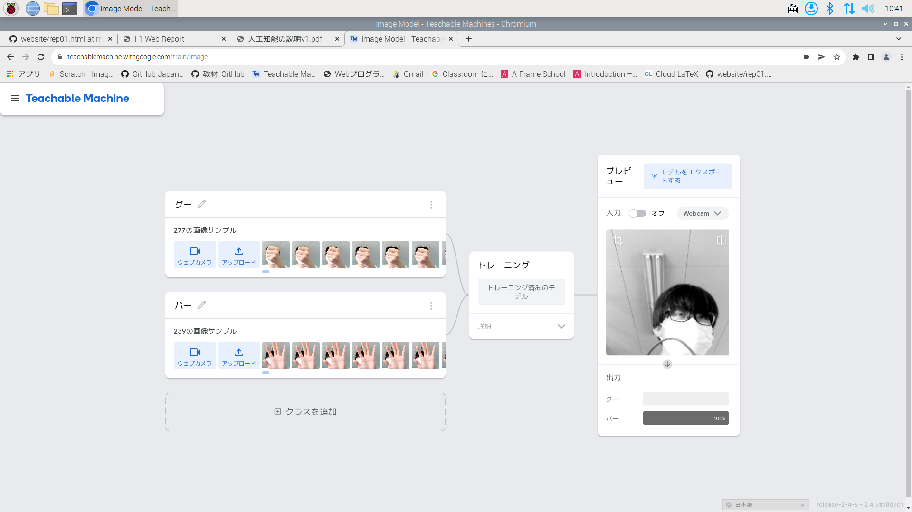
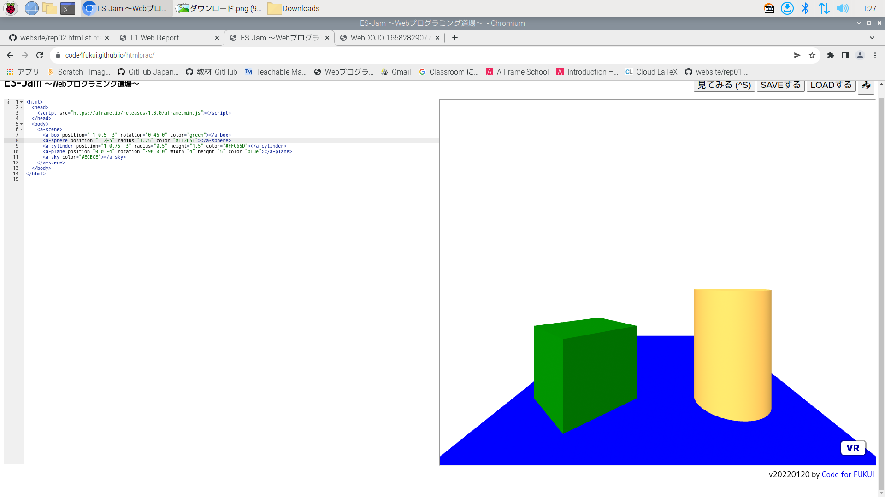

第2週目
2-1 レポートをHTMLで作る
１週目のレポート
1.内容
GitHubを用いて、HTMLでレポートを作成した。
2.感想
ホームページを第一回の授業で作っていいたので、そこまで困難ではなかった。br>
2-2 機械学習体験

1.内容
teachable machineを用いて、ウェブカメラで得られた映像をもとに、グーかパーを区別するプログラムを作成した。
2.感想
これほど簡単にプログラムを作成できるなんて、とても驚いた。そうなった理由として、技術の進歩があったからこそだと思う。つまり、技術の進歩は、さらに技術を進歩させるものとなり、
技術の進歩は止まらないと思う。
2-3 JavaScript体験：３次元モデルのプログラムを作る

３次元モデル
1.内容
Webプログラムを用いて、3Dのプログラムを作成した。
2.感想
これまでとは違い、プログラムを１つずつ書いていくもので、やはり、プログラムは甘くなかった。しかし、どのようにしてプログラムが成り立っているかを知り、複雑であると感じた。